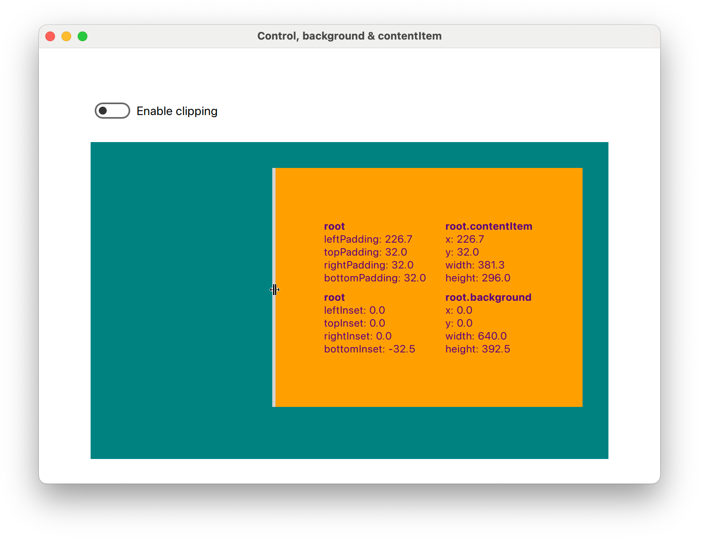

What makes Control components so magical?
Problem Statement
If you come from traditional UI toolkits such as GTK [1] or Qt Widgets [2] then the ultra-flexible way in how QML lets you position items and deal with layouts will be confusing. First, there isn't just one way but several layout strategies to choose from:
- Direct positioning & widget sizing (via x, y, width, height properties),
- Anchor layouts (anchors { ... }),
- Positioner containers (Flow, Row, Column, Grid),
- Dynamic layout containers (GridLayout, RowLayout, ColumnLayout),
- View containers (ListView, GridView, ScrollView, ...).
The first two operate on the Item level, relative to their parent, whereas the other three types operate as containers, meaning you can place items into them and they'll take care of the layout.
This is all good and fine until you realize that there are hidden conflicts, depending on which layout strategies you use and mix. But it also depends on whether your components, custom or not, are well-behaved. In the best case, you'll run into binding loop warnings, and perhaps you'll ignore them (hint: Don't!). In the worst case, unhappy layouts crash your application. And you'll never be quite sure whether a new Qt release will change these layout semantics (worst offender: Dynamic layout containers).
Here's an example that shows how easy it is to create a binding loop:
ApplicationWindow { id: root title: "Binding loop on implicitWidth" visible: true ScrollView { id: view anchors.fill: parent contentWidth: view.contentItem.width + view.leftPadding + view.rightPadding leftPadding: 6 rightPadding: 6 Item { width: view.width } } }
When run, the QML engine will show you this warning:
QML ScrollView: Binding loop detected for property "implicitWidth"
Unless you understand what's going on, this error message can be quite misleading! After all, we didn't even touch the ScrollView's implicitWidth property, and if we were to set it, the binding loop would magically disappear.
Here's a conflict created by mixing Positioner containers and anchors:
ApplicationWindow { id: root title: "Wrongly anchored Item inside a Row" visible: true Row { anchors.fill: parent Item { anchors.left: parent.left width: 60 height: 40 } } }
And that's the error we get, which at least is expected if you've read the documentation:
QML Row: Cannot specify left, right, horizontalCenter, fill or centerIn
anchors for items inside Row. Row will not function.
Here's the dreaded updatePolish() error that sends your application into a livelock:
ApplicationWindow { id: root title: "Livelocked in updatePolish()" visible: true ColumnLayout { anchors.fill: parent ColumnLayout { implicitWidth: parent.width implicitHeight: parent.height * 3 } ColumnLayout { implicitWidth: parent.width implicitHeight: parent.height + parent.children[0].height * 2 } ColumnLayout { implicitWidth: parent.width implicitHeight: parent.height + parent.children[1].height * 5 } } }
Upon launching the app, you either get the error immediately or you'll see it after attempting to resize the application window:
QML ColumnLayout: possible QQuickItem::polish() loop
QML ColumnLayout: ColumnLayout called polish() inside updatePolish() of ColumnLayout
(repeated)
What a bummer! Apparently we have to be careful in how we nest components, and which properties to bind. What if there was a component that could act as a layout barrier, reducing the risk of harmful layout interactions? Something that would look a bit like this:
ColumnLayout { // outer layout, shielded from inner layout SomeLayoutBarrier { Row { // inner layout, shielded from outer layout ... } } }
The anatomy of Control
Control [3] fits the concept of a layout barrier, partially due to its well-behavedness. It's essentially three components rolled into one:
- contentItem is where the content goes,
- background is mostly used for colouring,
- Control houses the other two and presents itself almost as a regular Item to the parent component.
Here is a simplified & slightly wrong example illustrating the basic idea of the Control component:
Item { id: control default property alias contentData: contentItem.data property real padding: 0 implicitWidth: background.implicitWidth implicitHeight: background.implicitHeight Rectangle { id: background anchors.centerIn: parent implicitWidth: 540 implicitHeight: 360 color: "teal" } Column { id: contentItem anchors { centerIn: parent margins: parent.padding } Text { text: "Hello there!" } } }
The same example, but instead of a poorly handrolled version we now use the Control component:
Control { id: root background: Rectangle { implicitWidth: 540 + root.leftInset + root.rightInset implicitHeight: 360 + root.topInset + root.bottomInset color: "teal" } contentItem: Column { Text { text: "Hello there!" } } }
Not only does the reduction in boilerplate result in much cleaner code, it also becomes more flexible, in a good way:
- Both background and contentItem are injectable and can be replaced for more customization,
- Implicit sizing (or natural sizing) is derived from the background item (don't forget to account for the {left, top, right, bottom}Inset properties),
- Explicit sizing is set on the contentItem by the Control, with no need to define anchors nor width or height ourselves,
- The {left, top, right, bottom} x {Padding, Inset} cross product of properties can be used to add margins to either the contentItem or the background item.
The clear semantics offered by Control also makes for an extremely robust component when compared to Item or some of QtQuick's *View components. Neither background nor contentItem are directly affected by whatever layout strategy is used for the Control. Conversely, whatever layout strategy is used for the contentItem, its side effects are contained by the Control itself.
It's no surprise then that Control is the base component for almost all widgets you can find in QtQuick2. The contentItem property offers a great customization point for slightly quirky components such as the Loader (strange anchor semantics) or the ScrollView (strange implicit size semantics). Thus the containment effect helps us to wrap not-so-well-behaved components into properly well-behaving Control components. This increases composability and lowers maintenance costs.
The small overhead induced by the two extra components for each Control encountered by the QML engine is a good trade-off to take.
A playground for Control
Building the proper intuition for Control isn't easy; there is no replacement for playing with the component. Especially the multi-layered interactions of padding, inset, explicit size, implicit size and positioning can be confusing.
So let's build a playground for ourselves to study the Control component:
ApplicationWindow { title: "Control, background & contentItem" width: 1280 height: 800 visible: true Column { anchors.centerIn: parent spacing: 24 Switch { action: Action { id: enableClipping text: "Enable clipping" checked: false checkable: true } } SomeControl { clip: enableClipping.checked } } }
SomeControl will have handles on each edge of the contentItem (shown in orange) and the background (shown in teal) that we can drag to change either padding or inset properties. It'll also display the current geometry for both items. The geometry of the Control is not affected by dragging the handles, which also explains the containment effect of our layout barrier:
The drag handles allow us to set negative values to each padding or inset property. When this happens, SomeControl will paint outside its bounds. In QML, each item is responsible for painting itself properly. The QML engine will not enforce painting within bounds unless clip: true is set. We use a switch to quickly see the effect of clipping vs. no-clip (default).
We notice that changing the leftPadding also changes contentItem.x, on top of the width, and topPadding affects contentItem.y on top of the height. When rightPadding or bottomPadding is changed however, only the width and height of the contentItem change. We can observe a similar effect for the background when changing the insets.
This is the basic structure of SomeControl:
Control { id: root background: Rectangle { color: "teal" implicitWidth: 640 - root.leftInset - root.rightInset implicitHeight: 360 - root.topInset - root.bottomInset } contentItem: Rectangle { color: "orange" } }
As mentioned before, we do not have to worry about explicit sizing for the Rectangle that is set as our contentItem. The implicit (or natural) sizing however is informed by the background, and we are responsible for mimicking the explicit size behaviour of the contentItem.
Q: What would happen if we had forgotten to substract the insets from implicitWidth and implicitHeight?
A: The background's size would remain constant, meaning that changing the insets would result in moving the background.
You can experiment with the playground yourself, the full code example [4] is available on GitHub. Here is a short video of the application:
Summary
We explored the Control component under the aspect of common QML layout issues and how to avoid them. Typical layout tasks can be simplified and its well-behavedness counters the side effects that are usually responsible for these issues. All that is required is to apply the patterns laid out for us, and to fully embrace the flexibility of the component. If done correctly, each Control component becomes a layout barrier, a concept & definition that we introduced in this article.